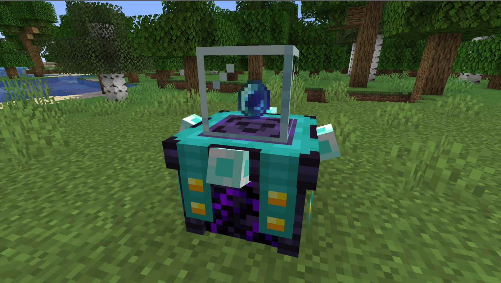
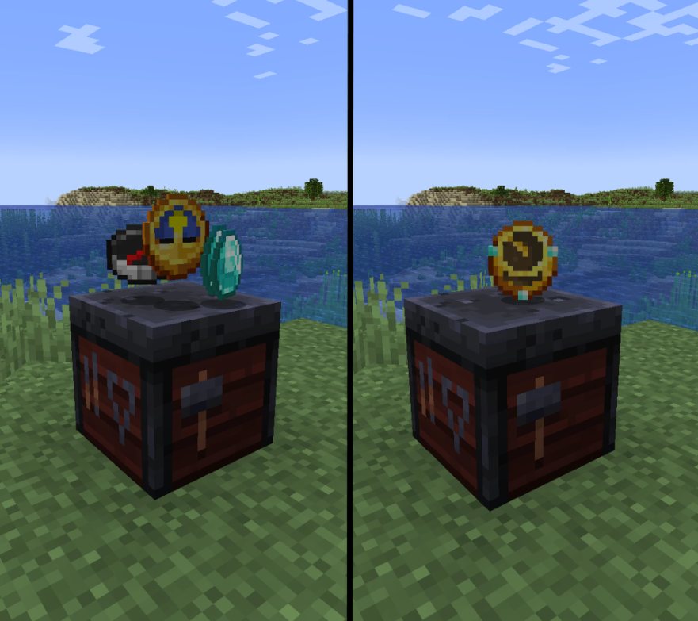

Data Packs :
Mod Minecraft 1
Ce mod ajoute de nouveaux éléments au jeu, tels que des blocs, des objets et des mobs. Il est compatible avec Minecraft 1.16 et nécessite Forge.
Voir le projet Télécharger le modMod Minecraft 2
Ce mod ajoute de nouvelles fonctionnalités au jeu, telles que des compétences et des sorts. Il est compatible avec Minecraft 1.17 et nécessite Fabric.
Télécharger le modMod Minecraft 3

Ce mod ajoute de nouvelles dimensions au jeu, chacune avec ses propres biomes et créatures. Il est compatible avec Minecraft 1.16 et nécessite Rift.
Télécharger le mod